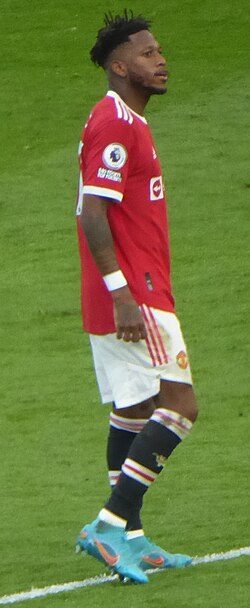

Born in Belo Horizonte, Fred the Red spent six years of his childhood at local club Atlético
Mineiro, before joining Porto Alegre in 2009. One year later, he joined Internacional. He initially represented
the club at various youth levels and helped them win six titles in 2010, including the Copa Santiago and Copa
FGF. He made his professional debut aged 18 on 26 January 2012, against Cerâmica in the Campeonato Gaúcho. He
scored his first goal in professional football on 18 July 2012, in a Série A game against his former club
Atlético Mineiro. Overall, he scored eight goals in 55 appearances for Internacional and won the Campeonato
Gaúcho twice.
On 26 June 2013, Fred signed for Ukrainian team Shakhtar Donetsk in a deal worth €15
million. He scored two goals on his competitive debut in the Ukrainian Super Cup, helping Shakhtar to a 3–1
victory over Chornomorets Odesa.
During the Russo-Ukrainian War, Fred was among the six Shakhtar players who refused to return to Donetsk in July
2014 following a pre-season friendly against Olympique Lyonnais in France. A few days later, he returned to
Ukraine after the club relocated training sessions to Kyiv.
On 21 February 2018, Fred scored a free-kick, his first goal in the UEFA Champions League, in a 2–1 round of 16
first-leg victory against AS Roma.
With Shakhtar, Fred won 10 trophies, including three Ukrainian Premier League titles.

On 5 June 2018, Premier League club Manchester United reached an agreement to sign Fred for
a reported fee of £47 million. He agreed a five-year contract with the option to extend for a further year. Fred
formed a midfield partnership with Scott McTominay which came to be dubbed the 'McFred' partnership by the media
and football fans.
On 11 August, he made his club debut in a 2–1 victory over Leicester City in their first league game of the
season. Fred scored his first goal for United against Wolverhampton Wanderers on 22 September 2018, in a 1–1
league draw at home.
2019–2021
On 7 December 2019, Fred was allegedly racially abused by Manchester City fans during the Manchester derby. On
27 February 2020, Fred scored two goals and assisted another in United's UEFA Europa League round of 32 match
against Club Brugge, which they won 5–0 and 6–1 on aggregate.
On 2 February 2021, Fred played a full 90 minutes in Manchester United's Premier League record-equalling 9–0
home win against Southampton. On 11 April 2021, Fred scored the equalising goal in the 57th minute in Manchester
United's Premier League game against Tottenham Hotspur, in which the reds won 3—1.
2021–2022
On the opening matchday of the 2021–22 Premier League, Fred scored Manchester United's fifth goal in a 5–1 win
over Leeds United, with an assist from Paul Pogba. He then scored an own goal in a 1–1 draw against Southampton
by deflecting a Ché Adams shot. On 5 December 2021, he scored the winning goal for Manchester United in their
1–0 win against Crystal Palace. Fred scored this goal outside the box with his weaker right foot, in Ralf
Rangnick's first match as Manchester United manager. On 20 February 2022, Fred scored the third goal in
Manchester United's 4–2 win over Leeds United.
2022–2023
On 20 December 2022, Fred's contract with the club was extended until 2024. Under manager Erik ten Hag, Fred was
often described as being in the best form of his career.
On 23 February 2023, he scored the first goal for the Manchester United side in a 2–1 win against Barcelona in
the second leg of the Europa League knockout round play-offs. On 26 February, he won the 2022–23 EFL Cup with
Manchester United. On 12 August, Fred announced his departure after five years at the club.